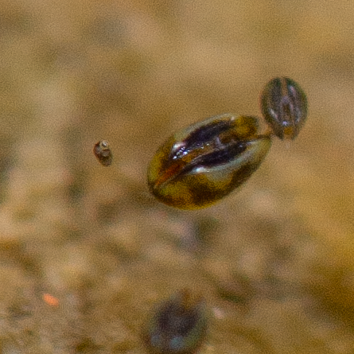
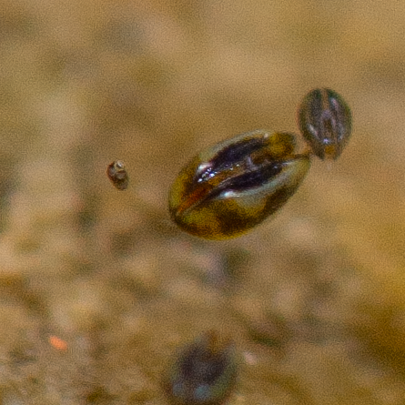

Myosurus minimus video project
The project on Myosurus minimus was chosen by Hedwig Bäbler to be part of her creative art project.
For the project, Hedwig chose eight botanical gardens to tell a story "between past and future" in video format, adding her personal reflection in written form to each video.
In the following, the video and text on the Botanical Garden of Bern.
Acht botanische Gärten in der Schweiz
Botanischer Garten Bern
Erzählt von Eva Malecore
Gedanken von Hedwin Bäbler
Der kleine Mäuseschwanz ist eine einjährige Pflanze. Jeden Frühling wachsen aus den Samen neue Pflänzchen heran, im März kommen sie aus der Erde, im April blühen sie und im Mai werfen sie die Samen ab und vergehen wieder.
Die Samen warten auf das nächste Jahr. Damit sie wachsen können, brauchen sie Platz. Und darum gedeihen sie da, wo Zerstörung herrscht. In der Natur sind das Überschwemmungen von unkontrollierten Flussläufen, in Solothurn ist es die Herbstmesse, wo Tausende Menschen noch den letzten Grashalm niedertrampeln.
Der kleine Mäuseschwanz braucht also das Ende, um einen Anfang machen zu können.
Vor ein paar Wochen fragte ich meinen Sohn, warum wir uns so viele Gedanken machen, ob wir Kinder in die Welt setzen wollen, während in Gebieten, wo Krieg herrscht, Hunger und Zerstörung, Kinder auf die Welt kommen.
Mein Sohn hat keine Sekunde überlegt.
Hoffnung, hat er gesagt. Hoffnung und Liebe.
Natürlich hat er recht.
Mir ist darauf ein Gedicht eingefallen, dass die ungarische Lyrikerin Caitlin Saida als Replik auf Emily Brontes «Hope is not a Bird,» geschrieben hat.
Hope Is Not a Bird, Emily, It’s a Sewer Rat
by Caitlin Seida
Hope is not the thing with feathers
That comes home to roost
When you need it most.
Hope is an ugly thing
With teeth and claws and
Patchy fur that’s seen some shit.
It’s what thrives in the discards
And survives in the ugliest parts of our world,
Able to find a way to go on
When nothing else can even find a way in.
It’s the gritty, nasty little carrier of such
diseases as
optimism, persistence,
Perseverance and joy,
Transmissible as it drags its tail across
your path
and bites you
in the ass.
Hope is not some delicate, beautiful bird,
Emily.
It’s a lowly little sewer rat
That snorts pesticides like they were
Lines of coke and still
Shows up on time to work the next day
Looking no worse for wear.
Ich habe jetzt in der Küche, über der Kaffeemaschine, ein Bild aufgehängt vom kleinen Mäuseschwanz. Damit ich jeden Morgen daran erinnert werde, dass die Hoffnung niemals aufgibt.

 
